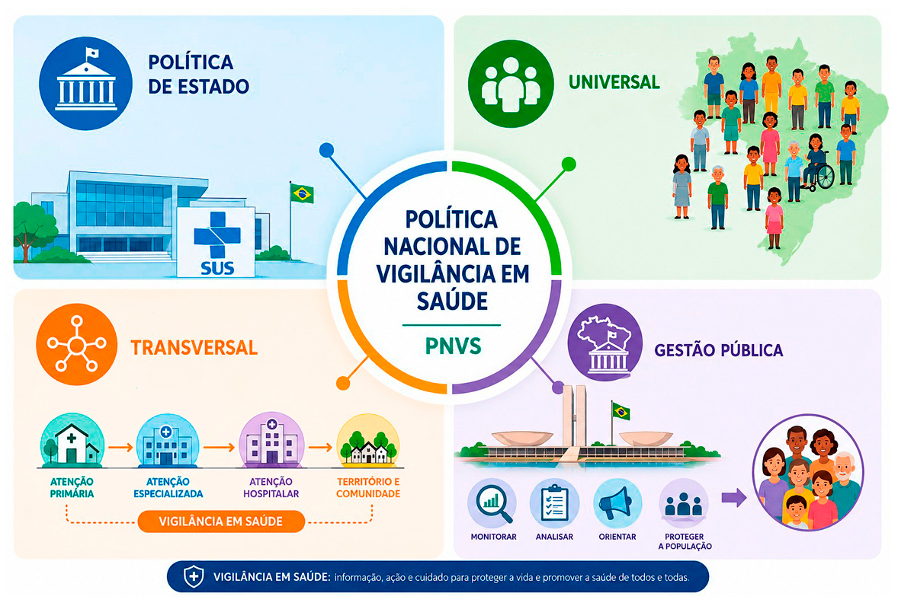
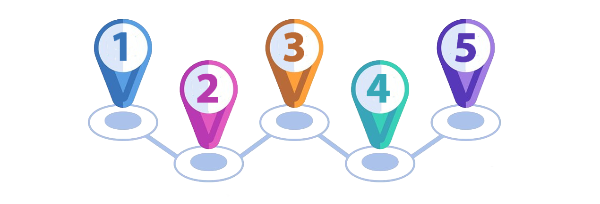

Vigilância Epidemiológica, Sanitária, Ambiental e do Trabalho
Sobre esta aula
Esta aula tem como objetivo apresentar o conceito ampliado de
Vigilância em Saúde e suas diferentes dimensões no contexto do Sistema Único de
Saúde (SUS),
considerando os desafios e as possibilidades que emergem em tempos de transformação
digital.
Ao longo do conteúdo, serão abordadas as dimensões sanitária,
epidemiológica, ambiental e da saúde do trabalhador, destacando como essas áreas se
articulam para fortalecer as ações de promoção da saúde.
Objetivos
de
aprendizagem
Ao final desta aula, esperamos que você seja capaz de:
Compreender o conceito ampliado de Vigilância em Saúde e suas
dimensões: sanitária, epidemiológica, ambiental e do trabalho.
Introdução
Você já parou para pensar em como o Sistema Único de Saúde
(SUS)
identifica surtos de doenças, controla a qualidade dos alimentos que consumimos ou
monitora
riscos à saúde nos ambientes de trabalho? Essas ações fazem parte da Vigilância em
Saúde, um
conjunto integrado de práticas que vai muito além do atendimento clínico individual.
A Vigilância em Saúde representa uma mudança importante no
modo de
pensar a saúde pública. O foco deixa de ser apenas o cuidado com a pessoa doente
para
abranger a proteção de toda a coletividade. Essa abordagem preventiva busca
identificar
riscos antes que se transformem em doenças e agravos.
Você
sabia?
A Constituição Federal de 1988 estabeleceu
que
compete ao SUS executar as ações de vigilância em saúde. Desde então, o
Brasil
vem construindo políticas e estruturas para organizar essas práticas de
forma
integrada nos territórios.
A Construção da Política Nacional de
Vigilância em
Saúde
Após amplo debate realizado na 1ª Conferência Nacional de
Vigilância
em Saúde, o Brasil instituiu a Política Nacional de Vigilância em Saúde (PNVS) por
meio da
Resolução nº 588, de 12 de julho de 2018. A
conferência propôs diretrizes para fortalecer as ações de promoção e proteção à
saúde em
todo o país.
Clique e veja abaixo as principais características da
PNVS em destaque no infográfico e o detalhamento de cada uma delas a seguir:
Recurso Interativo

Ações estratégicas
Mas o que isso significa na prática? A PNVS funciona como um
guia que
orienta as ações de vigilância em todo o Brasil. Ela ajuda a planejar e coordenar
atividades
que monitoram a saúde da população, identificam riscos e buscam evitar o surgimento
de
doenças e outros problemas de saúde. Essas ações acontecem desde pequenas cidades
até
grandes metrópoles, garantindo que todos recebam cuidados adequados (Brasil, s.d).
Definindo Vigilância em Saúde
A PNVS apresenta uma definição clara e abrangente. Vigilância
em
Saúde é o processo contínuo e sistemático de coleta, consolidação, análise de dados
e
disseminação de informações sobre eventos relacionados à saúde, visando o
planejamento e a
implementação de medidas de saúde pública, incluindo a regulação, intervenção e
atuação em
condicionantes e determinantes da saúde, para a proteção e promoção da saúde da
população,
prevenção e controle de riscos, agravos e doenças (Brasil, 2018).
Agora que você já viu a definição da Vigilância em Saúde no
contexto
da PNVS, assista ao vídeo a seguir sobre o serviço de vigilância em saúde e sua
importância
no planejamento das ações executadas pelo SUS.
Vídeo
Aula 1.2 •
Duração: 4:28
min
Legenda: Vigilância em Saúde
Fonte: Conexão SUS – YouTube
A partir das informações que você viu até aqui, ficou claro
que o
objetivo final da PNVS é proteger e promover a saúde da população, prevenir e
controlar
riscos, agravos e doenças?
Isso mesmo! A Vigilância em Saúde é um trabalho preventivo e
contínuo
que busca atuar antes que os problemas de saúde se instalem ou se agravem. De acordo
com a
OPAS (2010), ela tem dois componentes práticos essenciais:
A mensuração sistemática de problemas prioritários de saúde na
população, incluindo o registro e a transmissão de dados.
A comparação e interpretação de dados com o objetivo de detectar
possíveis
mudanças no estado de saúde da população e seu ambiente.
Ainda sob a perspectiva da OPAS (2010), a vigilância é
fundamental para as atividades de prevenção e controle de doenças, funcionando como
uma
ferramenta na alocação de recursos do sistema de saúde e na avaliação do impacto de
programas e serviços. O enfoque da vigilância requer equilíbrio entre as
necessidades de
informação e as limitações para a coleta de dados.
A análise e interpretação dos dados de vigilância deve
respeitar
limites de tempo, cobertura geográfica e número de indivíduos necessários para que
sejam
úteis na tomada de decisão.
Curiosidade
Vigilância é o mesmo que
monitoramento?
Embora os termos sejam usados de forma
intercambiável em muitos serviços, vigilância e monitoramento são
diferentes. A
vigilância relaciona-se com populações, enquanto o monitoramento
aplica-se a
grupos específicos ou indivíduos. O monitoramento avalia uma ação e
implica
ajuste constante com relação aos resultados. Ambos os processos
compartilham
rotinas contínuas de medida e coleta de dados, empregando métodos que
tendem a
ser rápidos e práticos (OPAS, 2010).
Princípios que orientam a Vigilância em Saúde
A PNVS está fundamentada nos mesmos princípios do SUS,
adaptados para
as especificidades da vigilância (Brasil, 2018):
Conhecimento do território:
utilização da
epidemiologia e da avaliação de risco para a definição de prioridades nos
processos de
planejamento, alocação de recursos e orientação programática.
Integralidade: Articulação das ações
de
vigilância em saúde com as demais ações e serviços desenvolvidos e ofertados no
SUS para
garantir a integralidade da atenção à saúde da população.
Descentralização
político-administrativa, com
direção única em cada esfera de governo.
Inserção da vigilância em saúde no
processo de
regionalização das ações e serviços de saúde.
Equidade: Identificação dos
condicionantes e
determinantes de saúde no território, atuando de forma compartilhada com outros
setores
envolvidos.
Universalidade: Acesso universal e
contínuo a
ações e serviços de vigilância em saúde, integrados à rede de atenção à saúde,
promovendo a corresponsabilização pela atenção às necessidades de saúde dos
usuários e
da coletividade.
Participação da comunidade de forma a
ampliar
sua autonomia, emancipação e envolvimento na construção da consciência
sanitária, na
organização e orientação dos serviços de saúde e no exercício do controle
social.
Cooperação e articulação intra e
intersetorial
para ampliar a atuação sobre determinantes e condicionantes da saúde.
Garantia do direito das pessoas e da
sociedade
às informações geradas pela Vigilância em Saúde, respeitadas as limitações
éticas e
legais.
Diretrizes para a ação
Para que esses princípios sejam colocados em prática, a
PNVS
estabelece diretrizes operacionais:
Articular e pactuar responsabilidades das três esferas de
governo,
consonante com os princípios do SUS, respeitando a diversidade e especificidade
loco
regional.
Abranger ações voltadas à saúde pública, com intervenções
individuais ou
coletivas, prestadas por serviços de vigilância sanitária, epidemiológica, em
saúde
ambiental e em saúde do trabalhador, em todos os pontos de atenção.
Construir práticas de gestão e de trabalho que assegurem a
integralidade do
cuidado, com a inserção das ações de vigilância em saúde em toda a Rede de
Atenção à
Saúde e em especial na Atenção Primária, como coordenadora do cuidado.
Integrar as práticas e processos de trabalho das vigilâncias
epidemiológica, sanitária, em saúde ambiental e em saúde do trabalhador e da
trabalhadora e dos laboratórios de saúde pública, preservando suas
especificidades,
compartilhando saberes e tecnologias, promovendo o trabalho multiprofissional e
interdisciplinar.
Promover a cooperação e o intercâmbio técnico-científico no âmbito
nacional
e internacional.
Atuar na gestão de risco por meio de estratégias para
identificação,
planejamento, intervenção, regulação, comunicação, monitoramento de riscos,
doenças e
agravos.
Detectar, monitorar e responder às emergências em saúde pública,
observando
o Regulamento Sanitário Internacional, e promover estratégias para
implementação,
manutenção e fortalecimento das capacidades básicas de vigilância em saúde.
Produzir evidências a partir da análise da situação da saúde da
população
de forma a fortalecer a gestão e as práticas em saúde coletiva.
Avaliar o impacto de novas tecnologias e serviços relacionados à
saúde de
forma a prevenir riscos e eventos adversos.
Saiba Mais
Regulamento Sanitário
Internacional
O Regulamento Sanitário Internacional (RSI)
representa um acordo entre países para prevenir e controlar a propagação
de
doenças. A versão de 1969 aplicava-se apenas a três doenças: cólera,
peste e
febre amarela. Com as transformações mundiais, uma nova versão foi
proposta em
2005, baseada no fortalecimento da vigilância e resposta às emergências.
O RSI 2005 estabelece quatro critérios para
definir
um evento como emergência de saúde pública de relevância internacional:
gravidade e repercussão; evento inesperado ou raro; risco de propagação
internacional; risco de restrição a viagens ou comércio. O Brasil, como
país-membro, comprometeu-se com o fortalecimento da vigilância em saúde
(OPAS,
2010).
Abrangência e campo de atuação
A PNVS tem abrangência ampla. Ela incide sobre todos os
níveis e
formas de atenção à saúde, com responsabilidade compartilhada entre as esferas de
governo.
Engloba serviços públicos e privados, além de estabelecimentos relacionados à
produção e
circulação de bens de consumo e tecnologias que, direta ou indiretamente, impactam a
saúde
(Brasil, 2018).
Isso significa que a Vigilância em Saúde atua desde Unidades Básicas de Saúde
(UBS) até
indústrias farmacêuticas, restaurantes, fábricas, ambientes de trabalho e
espaços públicos.
Onde existe risco potencial à saúde, a vigilância deve estar presente.
As quatro dimensões da Vigilância em Saúde
A PNVS articula conhecimentos, processos e práticas
relacionados a
quatro dimensões complementares:
Vigilância Epidemiológica
Monitora
doenças que
podem afetar a população, como dengue, gripe e COVID-19,
ajudando a
prevenir e controlar surtos.
Assista a esse
vídeo e aprofunde sua compreensão sobre este tema.
Essas dimensões não funcionam isoladamente. Elas se articulam
e se
complementam, reconhecendo que a saúde é determinada por múltiplos fatores que
interagem nos
territórios. Essa visão integrada permite atuação mais efetiva sobre os
condicionantes e
determinantes do processo saúde-doença.
Nos próximos tópicos, vamos explorar cada uma dessas
dimensões,
compreendendo suas especificidades, ferramentas e como a transformação digital tem
potencializado suas ações.
Objetivos da Vigilância em Saúde Pública
Agora que você já conhece as principais orientações da PNVS,
vamos
aprofundar nos objetivos práticos da Vigilância em Saúde. A Organização
Pan-Americana de
Saúde (OPAS) sistematizou esses objetivos de forma clara e operacional.
Os objetivos da vigilância são:
Detectar mudanças agudas na ocorrência e distribuição das
doenças.
Identificar, quantificar e monitorar as tendências e padrões do
processo
saúde-doença nas populações.
Observar as mudanças nos padrões de ocorrência dos agentes e
hospedeiros.
Detectar mudanças nas práticas de saúde. Investigar e controlar as
doenças.
Planejar os programas de saúde.
Avaliar as medidas de prevenção e controle.
O uso da vigilância pode ser classificado em três tipos:
Esses objetivos descrevem os padrões de
ocorrência das doenças:
Estimar a magnitude dos eventos (quão
frequente é
determinada doença na população).
Detectar mudanças agudas (surtos, epidemias e
problemas
emergentes).
Identificar e analisar tendências (por exemplo,
aumento
de doenças de transmissão sexual).
Observar mudanças nos agentes e hospedeiros
(por
exemplo, vigilância do vírus da influenza).
Detectar mudanças nas práticas de saúde (por
exemplo,
aumento da taxa de cesariana).
Usar os dados coletados para facilitar
avaliação
e investigação:
Investigar e controlar doenças: a
notificação
estimula investigação da fonte de infecção e ações rápidas
como
retirada de produtos do mercado ou alertas à população.
Planejar programas de saúde: analisar mudanças
no
tempo, lugar e pessoa permite antecipar recursos necessários
e
elaborar planos efetivos.
Avaliar medidas de prevenção e controle:
verificar se
estratégias estão funcionando e fazer ajustes necessários.
Testar hipóteses geradas pela análise dos
dados de
vigilância.
Construir séries históricas para desenvolver
modelos
estatísticos e prever a viabilidade de políticas propostas.
Tipos de Vigilância em Saúde Pública
Existem algumas formas de fazer vigilância no que diz
respeito ao
método utilizado para coleta de dados. A escolha depende das características da
doença ou
agravo, dos objetivos do sistema, dos recursos disponíveis e das fontes de
informação (OPAS,
2010).
Caracteriza-se pela notificação espontânea
dos casos pela fonte de informação. É o tipo mais utilizado na
análise sistemática de eventos adversos à saúde. Apresenta menor
custo e maior simplicidade, mas tem como desvantagem a
subnotificação, menor representatividade e dificuldade para
padronização da definição de caso (Brasil, 2022).
A equipe de vigilância estabelece contato
direto, em intervalos regulares, com as fontes de informação
(clínicas, laboratórios e hospitais). É aplicada a doenças raras ou
em programas de erradicação. Permite melhor conhecimento do
comportamento das doenças, mas é mais dispendiosa e necessita de
melhor infraestrutura (Brasil, 2022).
Observa-se o comportamento de casos em
populações específicas em determinadas unidades de saúde (unidades
sentinela). Permite estudar tendências de eventos de interesse e
conhecer o comportamento de doenças reemergentes. Pode ser aplicada
onde não é viável implantar vigilância universal. Os Núcleos
Hospitalares de Epidemiologia (NHE) são exemplos desta vigilância,
operando como unidades sentinela no território (Brasil, 2022).
Etapas da Vigilância em Saúde Pública
A vigilância é um processo cíclico, iniciado a partir da
suspeita,
detecção, identificação, ou diagnóstico de um doente com uma doença notificável ou
de
interesse em saúde pública, em qualquer serviço de saúde, público ou privado
(hospital,
posto de saúde, laboratório, farmácia etc.). (Brasil, 2022).
Cada etapa do ciclo de vigilância é composta por atividades
que têm o
objetivo comum de aprimorar as informações sobre determinado evento sob vigilância.
É
importante ressaltar que tal evento deverá ser definido pelas autoridades
sanitárias,
levando em consideração as normas vigentes e as condições particulares de cada área
geográfica. Essa definição deve ficar claramente registrada em documentos que serão
divulgados amplamente, o que permitirá unificar critérios na operação do sistema de
vigilância. É fundamental que nesse documento sejam incluídas as fontes de
notificação,
instrumentos de coleta de dados, definições de caso e a periodicidade da notificação
(OPAS,
2010 apud Brasil, 2022).
Ao longo desse processo, diferentes procedimentos se
articulam para
transformar dados em informações capazes de orientar a tomada de decisão em saúde
pública. A
seguir, vamos conhecer os principais elementos que compõem esse ciclo e compreender
como
cada um deles contribui para o funcionamento da Vigilância em Saúde.
Definição de caso
Quando um indivíduo tem características clínicas ou
laboratoriais
semelhantes a outros casos já registrados de determinada doença, atende ao que
chamamos de
definição de caso. Esta é uma etapa fundamental no desenvolvimento de um sistema de
vigilância, pois ajuda a compreender se aquele caso é ou não da doença em
investigação. Uma
boa definição de caso deve ser simples e aceitável.
Notificação
Após a identificação, o caso deve ser notificado nas fichas
próprias
do agravo ou doença. As secretarias municipais de saúde recolhem estas fichas para
digitação
e enviam o dado para o nível hierárquico superior. A partir da notificação, o caso
passa a
existir para a vigilância.
A notificação é a comunicação da ocorrência de casos
individuais,
agregados ou surtos, suspeitos ou confirmados, a partir da Lista Nacional de
Notificação
Compulsória. Deve ser feita às autoridades sanitárias por profissionais de saúde ou
qualquer
cidadão, visando às medidas de controle.
Principais fontes de dados para vigilância
Notificação de casos: procedimento por meio do qual os
serviços de
saúde informam de modo rotineiro e obrigatório sobre a ocorrência de eventos
sujeitos à
vigilância.
Registros: procedimentos realizados por instituições para
registrar
regularmente eventos como nascimentos, óbitos, hospitalizações, imunizações,
entre
outros.
Pesquisa de casos e surtos: busca ativa e exaustiva de informação
complementar sobre um ou mais casos, geralmente em resposta à suspeita de
epidemia.
Pesquisas: coleta de informação em ponto específico de tempo sobre
características de interesse não disponíveis em outras fontes.
Rumores: opiniões espontâneas e não confirmadas que têm origem na
comunidade, associadas ao aumento de casos ou mortes por determinada causa.
Análise e interpretação
A consolidação dos casos dá lugar à análise e interpretação
dos
resultados. A análise permite compreender se foram detectados picos ou aumentos
consideráveis. Deve buscar entender diferenças e semelhanças com achados de outros
serviços
ou publicações. Assim, os dados coletados se tornam informações em saúde.
Disseminação
As informações geradas devem ser compartilhadas com quem
necessita:
tomadores de decisões, profissionais que notificam, médicos, técnicos de laboratório
e a
população. Os dados são fruto dos atendimentos e serviços prestados à população, que
tem
direito de acessá-los.
Ação
A vigilância é designada por "informação para a ação". A ação
pode
ser uma investigação de surto, realocação de recursos, alteração em testes
laboratoriais, ou
mudança em práticas e políticas de saúde.
Avaliação
É importante que um Sistema de Vigilância seja avaliado a
partir de
diretrizes e documentos norteadores. As ações de avaliação e monitoramento
reorientam as
diretrizes do sistema e podem subsidiar ações que aprimorem a captação dos casos e o
desenvolvimento de melhorias nos serviços de saúde.
Vigilância em Saúde e Transformação Digital
no SUS
A transformação digital na saúde é um fenômeno que está
mudando
profundamente a forma como os serviços de saúde são prestados e geridos. No contexto
da
vigilância em saúde, essas mudanças são ainda mais significativas, pois ampliam a
capacidade
de detecção, análise e resposta a eventos de saúde pública.
O cenário da transformação digital na
vigilância
Lideranças nacionais da saúde debatem o uso das soluções
digitais na
proteção e prevenção de doenças e agravos. As perspectivas de aprimoramento das
estratégias
de prevenção e controle de doenças com o uso das inovações digitais são promissoras,
mas
também apresentam desafios variados para a transformação digital no Sistema Único de
Saúde
(Painel de Obesidade, 2025).
Diversas iniciativas em saúde digital já ilustram a
incorporação e o
desenvolvimento de soluções tecnológicas na Atenção Primária à Saúde e na Vigilância
em
Saúde em diferentes regiões do Brasil. Essas experiências demonstram como a
tecnologia pode
fortalecer as práticas de vigilância e ampliar o acesso aos serviços de saúde
(Jatobá et
al.,2025).
Experiências internacionais e nacionais
A análise de experiências em diferentes países revela
abordagens
diversas para a transformação digital na saúde. Em Portugal, destacam-se o uso da
inteligência artificial para vigilância epidemiológica e consultas de triagem e
rastreamento
em teledermatologia nas unidades de cuidados primários (Rodrigues et al., 2025).
No Brasil, marcos importantes incluem a institucionalização
da
Secretaria de Informação e Saúde Digital no Ministério da Saúde e a criação da
Unidade
Básica de Saúde Digital no contexto da Atenção Primária. A telessaúde é aplicada
especialmente em áreas rurais remotas, com ações de teleconsulta e vigilância
epidemiológica. Unidades fixas e móveis de telessaúde ampliam o acesso aos serviços
de saúde
em regiões de difícil alcance (Rodrigues et al., 2025).
As competências digitais dos profissionais de saúde são
reforçadas
com a inclusão de informática em saúde nos cursos de formação. Conhecer o arcabouço
regulatório é de grande relevância para alinhar a formação dos atuais e futuros
profissionais, propiciando uma transformação digital democrática (Rodrigues et
al.,2025).
A Secretaria de Informação e Saúde Digital
(SEIDIGI)
Criada em 1º de janeiro de 2023, a Secretaria de Informação e
Saúde
Digital coordena a transformação digital do Sistema Único de Saúde. O objetivo é
ampliar o
acesso, promover a integralidade e a continuidade do cuidado em saúde (Brasil,
2023).
A SEIDIGI atua em colaboração com as secretarias do
Ministério da
Saúde, com os profissionais de saúde e com os gestores do SUS na utilização de
soluções
digitais. Entre essas soluções destacam-se o prontuário eletrônico, a telessaúde, a
disseminação de informações estratégicas em saúde e a proteção de dados (Brasil,
2023).
O objetivo central é colocar o usuário do SUS no centro do
cuidado,
garantindo atendimento integral e acessível, onde ele é o protagonista de sua
jornada de
saúde e prevenção. Para a vigilância em saúde, isso significa sistemas mais
integrados,
dados mais acessíveis e respostas mais rápidas a eventos de saúde pública (Brasil,
2023).
Impactos na prática da vigilância
A transformação digital impacta diretamente a prática da
vigilância
em saúde, veja:
Detecção
mais rápida
Sistemas digitais
identificam eventos de saúde em tempo real, permitindo
respostas mais ágeis.
Análise
mais robusta
Ferramentas de
análise de dados processam grandes volumes de
informações, identificando padrões e tendências.
Integração
de dados
Diferentes
sistemas de informação conversam entre si, oferecendo
uma visão mais completa da situação de saúde.
Acesso
ampliado
Tecnologias como
telessaúde levam vigilância e cuidado a áreas remotas.
Empoderamento do usuário
Aplicativos e
plataformas digitais permitem que cidadãos participem
ativamente da vigilância.
Desafios para uma transformação digital
democrática
Apesar dos avanços, a transformação digital na vigilância em
saúde
enfrenta alguns desafios importantes:
Recurso Interativo

Ações estratégicas
Superar esses desafios é fundamental para que a transformação
digital
fortaleça a vigilância em todos os territórios, contribuindo para um SUS mais
efetivo,
democrático e inclusivo!
Atividade
Questão 01 de 02
Acertos: 0
Selecione uma opção para confirmar sua
resposta.
Resumo da aula
Nesta aula, você conheceu o conceito ampliado de Vigilância
em Saúde
e suas quatro dimensões: epidemiológica, sanitária, ambiental e do trabalhador.
Compreendeu
como a Política Nacional de Vigilância em Saúde (PNVS) organiza essas práticas de
forma
integrada no território, orientada por princípios e diretrizes que buscam proteger e
promover a saúde da população.
Você também conheceu os objetivos, tipos e etapas da
vigilância em
saúde pública, entendendo como esse processo cíclico transforma dados em informação
e
informação em ação. Além disso, você viu como a transformação digital tem
potencializado
essas práticas, ampliando a capacidade de detecção, análise e resposta a eventos de
saúde
pública no contexto do SUS.
Você concluiu esta aula, continue se empenhando nos
seus estudos. Siga para a próxima aula!